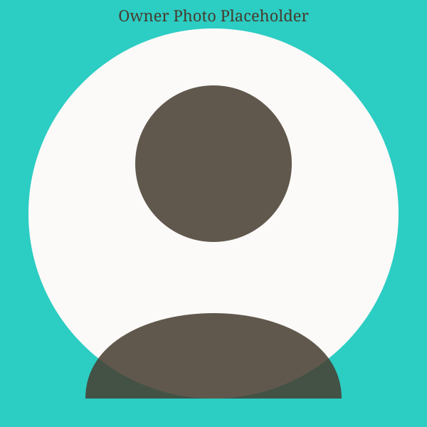

A MAD idea, born in 2020
In 2020, life changed for all of us. At the time, I was a single mom of three amazing kids, and we were home together every day. I started looking for a way to bring in a little extra money for my family — and baking was the thing that kept us busy, happy and a little bit MAD.
What started as brownies and cupcakes for family and friends quickly turned into something bigger. Word spread, orders grew, and J's MAD Sweets was born right here in Fort Wayne.
Today, every cake, cupcake and brownie is still made from scratch, with the same love and MADness for sweets that started it all.
What We Believe In
Made From Scratch
No shortcuts — every order is baked fresh, just for you.
Family First
Started by a mom for her family, and still run that way today.
A Little MAD, A Lot of Love
Every treat is made with care, creativity, and a whole lot of MADness.